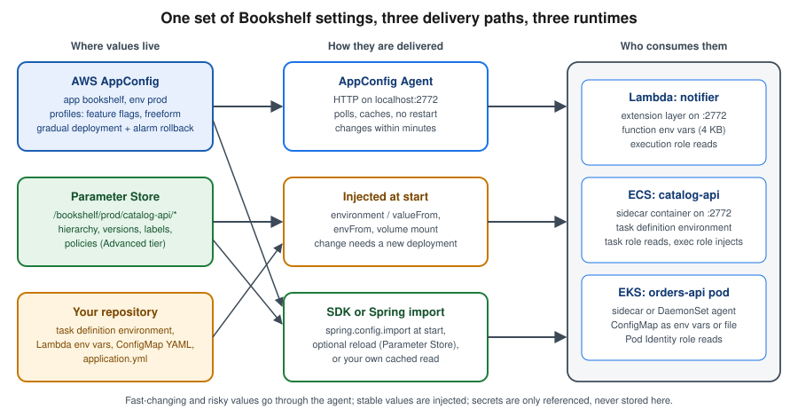

Runtime Configuration
|
This content was generated with the assistance of AI and should be verified against the official documentation before being relied on in production. |
Commands and behaviour on this page are current for AWS CLI v2 (2.37 line), the AWS AppConfig Agent 2.x (Lambda
extension 2.0.22365, released 2026-08-24), AppConfig experimentation (generally available since 2026-07-01) and
Spring Cloud AWS 4.2.0 (the 4.x line targets Spring Boot 4; checked 2026-10-01); re-verify against aws --version
and the linked reference pages before relying on them in a pipeline. Examples use us-east-1 and the placeholder
account ID 111122223333; both are stand-ins for your own values.
Most of what a running service needs to know is not code: a page size, an upstream timeout, a switch that turns a new
screen on for a tenth of the traffic. This page covers the AWS ways to keep those values outside the build and, where
it is worth the machinery, to change them while the service keeps running: AWS AppConfig (profiles, feature flags,
safe gradual deployments, a local agent), Systems Manager Parameter Store (a plain hierarchy of values),
environment variables on Lambda and ECS, and ConfigMaps on EKS. Secrets themselves — database passwords, API keys,
KMS — are deliberately not repeated here; they live on Secrets Manager, Parameter Store and KMS, and this page
only shows how the mechanisms below reference them. Application-side loading in Spring Boot (property-source
order, @ConfigurationProperties, @RefreshScope, the Parameter Store and Secrets Manager imports) is on
Configuration and Profiles; the Kubernetes objects are on
ConfigMaps. For the Azure counterpart see Runtime Configuration.
The problem: configuration, secrets and flags
Bookshelf’s catalog-api (ECS), orders-api (EKS) and notifier (Lambda) need three different kinds of values, each
with its own owner and change cadence:
-
Plain configuration — a log level, a page size, an upstream URL. Not sensitive, reviewable in a diff.
-
Secrets — the database credential, a third-party API key. Never plaintext at rest, access audited. Stored in Secrets Manager or as
SecureStringparameters and only referenced by the mechanisms on this page. -
Feature flags — a boolean (or a value chosen per request) that turns behaviour on without a build, so a feature ships dark and is switched on for a slice of traffic, then for everyone, then removed.
All three vary per environment (dev, staging, prod), and teams increasingly want to change some of them without
a redeploy. Those two wishes pull in different directions: a value baked into a task definition is trivially
reviewable and reproducible but needs a rollout; a value fetched at run time changes in minutes but can break
production without a pipeline noticing. AppConfig exists to give the second kind the same safety (validation, gradual
rollout, automatic rollback) that a code deployment has.

Choosing a mechanism
| Mechanism | Best for | Changes reach a running process | Main caveat |
|---|---|---|---|
Environment variables (Lambda, ECS task definition) |
Small, stable, per-environment values such as the Spring profile or a bucket name |
Never; a new function configuration or task definition revision and a rollout are required |
Visible to anyone who can read the definition; not for secrets |
Kubernetes ConfigMap |
Non-secret settings of a pod, shared by a Deployment |
Env vars: never. Mounted files: eventually, if the app re-reads them |
Pods do not restart on their own when a ConfigMap changes |
Parameter Store |
A hierarchy of plain values per service and environment, cheap or free, plus |
Only when the code re-reads (SDK call, Spring reload); an ECS |
No validation, no staged rollout, no rollback beyond restoring an older version |
AppConfig freeform profile |
Structured settings (JSON, YAML) that need schema validation and a staged rollout |
Within the agent poll interval after the deployment reaches the caller |
An extra service to learn; a deployment is the unit of change |
AppConfig feature-flag profile |
Boolean and attribute-carrying flags, per-segment targeting, experiments |
Same as above |
Flags need a removal discipline; stale flags are technical debt |
Spring |
Loading any of the above into a Spring |
Only with an explicit reload (Parameter Store) or a restart; AppConfig import has none |
Fails the start-up if a required source is missing, unless |
Rule of thumb for Bookshelf: put the Spring profile and static endpoints in the task definition or Helm values; put the page size and timeouts in Parameter Store while a single team changes them rarely; put anything that is risky to flip for everyone at once — a new recommendation algorithm, a rewritten checkout — in an AppConfig feature flag and roll it out gradually.
Parameter Store
Parameter Store is the configuration store of AWS Systems Manager: a regional key-value store whose keys are
hierarchical paths, whose values are String, StringList or SecureString (encrypted with KMS), and which
keeps a numbered version for every change.
Hierarchies, tiers and limits
Name parameters like a file tree so one IAM policy and one get-parameters-by-path call can cover a whole service:
/bookshelf/prod/catalog-api/page-size String
/bookshelf/prod/catalog-api/upstream-timeout String
/bookshelf/prod/catalog-api/db/password SecureString (reference only; see the secrets page)
/bookshelf/prod/orders-api/retry-max-attempts String
/bookshelf/dev/catalog-api/page-size String| Standard | Advanced | |
|---|---|---|
Parameters per account and Region |
10,000 |
100,000 |
Maximum value size |
4 KB |
8 KB |
Parameter policies (expiration and change notifications) |
No |
Yes |
Cross-account sharing |
No |
Yes |
Cost |
No additional charge |
Monthly storage charge per parameter plus API interactions |
Change tier later |
Can be upgraded |
Cannot be downgraded (delete and recreate) |
Derived from Choosing parameter tiers in Parameter Store. A separate setting, throughput, controls the request rate: the default throughput is free for standard parameters, while the higher-throughput setting bills API interactions for both tiers. Pricing has three drivers — tier, API interactions (a request that returns ten parameters counts as ten) and throughput — and no number is quoted here because it moves; see the dated AWS Systems Manager pricing page.
In the AWS Management Console
-
Pick the Region with the selector in the top bar (CloudShell opens in the same Region).
-
Open Systems Manager → Application Management → Parameter Store → Create parameter.
-
Name:
/bookshelf/prod/catalog-api/page-size; Tier: Standard; Type: String; Data type: text; Value:25; select Create parameter. -
To see history, open the parameter and choose the History tab: every change is a version, and Labels (for example
approved) can be attached to a version. -
To browse a service, use My parameters and filter by the path prefix.
With the AWS CLI
export AWS_REGION=us-east-1
aws ssm put-parameter \
--name /bookshelf/prod/catalog-api/page-size \
--type String --value 25 --tier Standard
# Every parameter of one service, one request (the call is paginated; recursive walks sub-paths)
aws ssm get-parameters-by-path \
--path /bookshelf/prod/catalog-api/ --recursive \
--query "Parameters[].{Name:Name,Value:Value,Version:Version}" --output table
# Update (a new version), then pin a label to the version you reviewed
aws ssm put-parameter --name /bookshelf/prod/catalog-api/page-size \
--type String --value 50 --overwrite
aws ssm label-parameter-version \
--name /bookshelf/prod/catalog-api/page-size --parameter-version 1 --labels approved
# Read by label or by version: name:label and name:version
aws ssm get-parameter --name /bookshelf/prod/catalog-api/page-size:approved \
--query Parameter.Value --output text
aws ssm get-parameter-history --name /bookshelf/prod/catalog-api/page-size \
--query "Parameters[].{Version:Version,Value:Value,Labels:Labels}"Derived from aws ssm put-parameter, aws ssm get-parameters-by-path, aws ssm label-parameter-version and aws ssm get-parameter-history.
Parameter policies (Advanced tier only) add time-based behaviour: an Expiration that deletes the parameter, an
ExpirationNotification that raises an EventBridge event before that, and a NoChangeNotification that fires when a
parameter has not changed for a given time — useful for reminding a team to review a stale feature switch:
aws ssm put-parameter \
--name /bookshelf/prod/catalog-api/promo-banner \
--type String --value "spring-sale" --tier Advanced \
--policies '[{"Type":"NoChangeNotification","Version":"1.0","Attributes":{"After":"30","Unit":"Days"}}]'Derived from Assigning parameter policies in Parameter Store.
IAM policy for reading one service’s parameters
Grant the task role, Lambda execution role or Pod Identity role the narrowest read path. A SecureString also needs
kms:Decrypt on its key (see the secrets page); the plain parameters below do not.
{
"Version": "2012-10-17",
"Statement": [
{
"Sid": "ReadCatalogApiParameters",
"Effect": "Allow",
"Action": ["ssm:GetParameter", "ssm:GetParameters", "ssm:GetParametersByPath"],
"Resource": [
"arn:aws:ssm:us-east-1:111122223333:parameter/bookshelf/prod/catalog-api",
"arn:aws:ssm:us-east-1:111122223333:parameter/bookshelf/prod/catalog-api/*"
]
}
]
}The path itself is listed as well as its children because ssm:GetParametersByPath is authorised against the path
that the caller passes. Derived from Restricting access to Systems Manager parameters.
AWS AppConfig
AppConfig is a capability of AWS Systems Manager built for exactly the second kind of value above. It adds what Parameter Store lacks: validation before a value is accepted, a deployment that rolls a change out gradually, automatic rollback when a CloudWatch alarm fires, first-class feature flags, and an agent that fetches and caches the result next to your code.
Concepts
- Application
-
A namespace for one workload, here
bookshelf. Not the same as an ECS service or a Lambda function. - Environment
-
A deployment target of an application, such as
dev,stagingorprod, optionally with CloudWatch alarms that guard its deployments (the monitors). - Configuration profile
-
The definition of one piece of configuration: where it comes from (the location) and what kind it is. A freeform profile holds JSON, YAML or text (
AWS.Freeform); a feature-flag profile holds flags in theAWS.AppConfig.FeatureFlagsJSON format and always lives in the hosted store. - Configuration source
-
Where a freeform profile’s data is stored: the AppConfig hosted configuration store (no extra cost), an S3 object, a Systems Manager parameter or document, a Secrets Manager secret, or a CodePipeline artifact. Non-hosted sources need a retrieval role that AppConfig assumes to read them.
- Validator
-
A check run when a version is created and again at deployment time: a JSON Schema or a Lambda function that rejects a bad value before it reaches any caller. Feature-flag profiles also enforce the attribute constraints you define on each flag.
- Deployment strategy
-
How a version rolls out: type (linear or exponential), step percentage, total deployment time and a bake time during which alarms are still watched after 100% is reached.
- Deployment
-
One run of a strategy for a profile version into an environment. An environment runs one deployment at a time.
Deployment strategies and rollback
AppConfig ships predefined strategies and lets you create your own:
| Predefined strategy | Behaviour |
|---|---|
|
AWS-recommended for production: 20% of targets every six minutes over 30 minutes, then a 30-minute bake time. |
|
AWS-recommended for production: exponential rollout with a 10% growth factor over 20 minutes, then a 10-minute bake. |
|
Everything immediately, then a 10-minute bake. Quick, but alarms are your only protection. |
|
Testing and demonstration only: one-minute deployment and a one-minute bake. |
Derived from Using predefined deployment strategies.
A linear strategy adds the step percentage evenly across the deployment time; an exponential one applies
G*(2^N) (2%, 4%, 8%, … for a growth factor of 2). "Targets" are not instances: AppConfig counts the callers that
request the configuration (agents or SDK sessions), and each one switches version when its next poll lands after its
turn in the schedule.
validators run"] -->|invalid| X["Rejected, nothing deployed"] A -->|valid| B["start-deployment
strategy: AppConfig.Canary10Percent20Minutes"] B --> C["Roll out to a growing share of callers
agents poll and pick up version 7"] C --> D{"CloudWatch alarm on the environment
in ALARM state?"} D -->|yes| R["Automatic rollback
callers return to version 6"] D -->|no| E["100% reached, bake time starts"] E --> F{"Alarm during bake time?"} F -->|yes| R F -->|no| G["Deployment COMPLETE"] C -->|operator| S["stop-deployment
manual rollback"] S --> R
Rollback needs two things: an alarm attached to the environment and an IAM alarm role that lets AppConfig read the
alarm state. The role trusts the AppConfig service principal and needs only cloudwatch:DescribeAlarms:
{
"Version": "2012-10-17",
"Statement": [
{ "Effect": "Allow", "Action": "cloudwatch:DescribeAlarms", "Resource": "*" }
]
}Trust policy for the role bookshelf-appconfig-monitor:
{
"Version": "2012-10-17",
"Statement": [
{
"Effect": "Allow",
"Principal": { "Service": "appconfig.amazonaws.com" },
"Action": "sts:AssumeRole"
}
]
}Create the role, the permission and the alarm (the alarm watches target 5xx responses of alb-bookshelf; the
dimension value is the part of the load balancer ARN after loadbalancer/, shown here as a placeholder):
aws iam create-role --role-name bookshelf-appconfig-monitor \
--assume-role-policy-document file://appconfig-trust.json
aws iam put-role-policy --role-name bookshelf-appconfig-monitor --policy-name describe-alarms \
--policy-document file://describe-alarms.json
aws cloudwatch put-metric-alarm --alarm-name bookshelf-catalog-api-5xx \
--namespace AWS/ApplicationELB --metric-name HTTPCode_Target_5XX_Count \
--dimensions Name=LoadBalancer,Value=app/alb-bookshelf/0123456789abcdef \
--statistic Sum --period 60 --evaluation-periods 3 --threshold 20 \
--comparison-operator GreaterThanThreshold --treat-missing-data notBreachingDerived from Setting up AWS AppConfig (the "Configure permissions for automatic rollback" section), aws iam create-role and aws cloudwatch put-metric-alarm.
In the AWS Management Console
-
Pick the Region; open AWS AppConfig (listed under Systems Manager → Application Management) and choose Create application. Name it
bookshelfand create it. -
On the application, Environments tab → Create environment: name
prod; under Monitors choose the CloudWatch alarmbookshelf-catalog-api-5xxand the IAM rolebookshelf-appconfig-monitor. -
Configuration profiles and feature flags tab → Create configuration:
-
Feature flag: give the profile a name (
catalog-flags) and, on the next step, add a flagcatalog-recommendations(key, name, Enabled), optionally attributes such asmaxItems(number, minimum 1, maximum 50). Save and create. -
Freeform configuration: name
catalog-settings, source AWS AppConfig hosted configuration, content type JSON, paste the JSON, and add a JSON Schema validator.
-
-
Open the profile and choose Start deployment: pick the environment
prod, the hosted version, a strategy such asAppConfig.Canary10Percent20Minutes, and start. -
Watch the Deployment page: it shows the percentage, the state (
DEPLOYING,BAKING,COMPLETE,ROLLED_BACK) and the alarm. Stop deployment rolls an in-progress deployment back.
With the AWS CLI
Create the application, the environment with its alarm monitor, and a freeform profile with a JSON Schema validator:
export AWS_REGION=us-east-1
export ACCOUNT_ID=$(aws sts get-caller-identity --query Account --output text)
APP_ID=$(aws appconfig create-application --name bookshelf \
--query Id --output text)
ENV_ID=$(aws appconfig create-environment \
--application-id "$APP_ID" --name prod \
--monitors "[{\"AlarmArn\":\"arn:aws:cloudwatch:${AWS_REGION}:${ACCOUNT_ID}:alarm:bookshelf-catalog-api-5xx\",\"AlarmRoleArn\":\"arn:aws:iam::${ACCOUNT_ID}:role/bookshelf-appconfig-monitor\"}]" \
--query Id --output text)
cat > catalog-settings.schema.json <<'EOF2'
{
"$schema": "http://json-schema.org/draft-07/schema#",
"type": "object",
"properties": {
"pageSize": { "type": "integer", "minimum": 1, "maximum": 100 },
"upstreamTimeoutMs": { "type": "integer", "minimum": 100, "maximum": 30000 }
},
"required": ["pageSize", "upstreamTimeoutMs"],
"additionalProperties": false
}
EOF2
PROFILE_ID=$(aws appconfig create-configuration-profile \
--application-id "$APP_ID" --name catalog-settings \
--location-uri hosted --type AWS.Freeform \
--validators "[{\"Type\":\"JSON_SCHEMA\",\"Content\":$(jq -Rs . < catalog-settings.schema.json)}]" \
--query Id --output text)Derived from aws appconfig create-application, aws appconfig create-environment and aws appconfig create-configuration-profile.
Save a first version of the settings (the output file receives an echo of the stored content; the version number is in the JSON that the command prints) and deploy it with a predefined strategy:
echo '{"pageSize": 25, "upstreamTimeoutMs": 2000}' > catalog-settings.json
aws appconfig create-hosted-configuration-version \
--application-id "$APP_ID" --configuration-profile-id "$PROFILE_ID" \
--content-type "application/json" \
--content fileb://catalog-settings.json \
--query VersionNumber catalog-settings.out
aws appconfig start-deployment \
--application-id "$APP_ID" --environment-id "$ENV_ID" \
--configuration-profile-id "$PROFILE_ID" --configuration-version 1 \
--deployment-strategy-id AppConfig.Canary10Percent20Minutes \
--description "page size 25"
aws appconfig list-deployments --application-id "$APP_ID" --environment-id "$ENV_ID" \
--query "Items[].{N:DeploymentNumber,State:State,Percent:PercentageComplete}" --output tableDerived from aws appconfig create-hosted-configuration-version, aws appconfig start-deployment and aws appconfig list-deployments.
A custom strategy, for instance a gentler production canary, and a manual rollback of the running deployment:
STRATEGY_ID=$(aws appconfig create-deployment-strategy \
--name bookshelf-canary-10-30 \
--deployment-duration-in-minutes 30 --growth-factor 10 --growth-type EXPONENTIAL \
--final-bake-time-in-minutes 15 --replicate-to NONE \
--query Id --output text)
# Roll back an in-progress deployment (the callers return to the previous version)
aws appconfig stop-deployment \
--application-id "$APP_ID" --environment-id "$ENV_ID" --deployment-number 2Derived from aws appconfig create-deployment-strategy and aws appconfig stop-deployment. To undo a deployment that already finished, deploy the previous version again.
Feature flags
A feature-flag profile stores flags in a defined JSON format: a flags object (metadata and attribute constraints), a
values object (the current state) and a version. Attributes ride along with the flag only when it is enabled, and
the constraints keep an out-of-range value from being deployed.
FLAGS_ID=$(aws appconfig create-configuration-profile \
--application-id "$APP_ID" --name catalog-flags \
--location-uri hosted --type AWS.AppConfig.FeatureFlags \
--query Id --output text)
cat > catalog-flags.json <<'EOF2'
{
"version": "1",
"flags": {
"catalog-recommendations": {
"name": "Catalog recommendations",
"attributes": {
"maxItems": { "constraints": { "type": "number", "required": true, "minimum": 1, "maximum": 50 } }
}
}
},
"values": {
"catalog-recommendations": { "enabled": false, "maxItems": 10 }
}
}
EOF2
aws appconfig create-hosted-configuration-version \
--application-id "$APP_ID" --configuration-profile-id "$FLAGS_ID" \
--content-type "application/json" --content fileb://catalog-flags.json \
--query VersionNumber catalog-flags.outDerived from Creating a feature flag configuration profile (command line) and the AWS.AppConfig.FeatureFlags type reference. AppConfig validates the document against the feature-flag schema when the version is created and rejects it if an attribute breaks its constraint.
Multi-variant flags return different values for different callers: you create the profile first, then edit a flag to add variants and rules; the application passes context (a user ID, a tenant, a country) with each request and AppConfig evaluates the rules and returns the matching variant. Experimentation, generally available since 2026-07-01, builds on this: an experiment definition attaches treatments (and their traffic allocation) to a flag, the agent records which entity received which treatment, you analyse the outcome in CloudWatch or your own analytics, and the winning treatment is promoted through a normal deployment. Experiments are billed per experiment hour, and the default quotas (a limited number of experiment definitions per application, a handful of treatments per experiment) are listed under Limits and quotas.
Entity-based gradual deployments (agent 2.0.136060 or later) make a gradual rollout sticky: the caller sends an
Entity-Id HTTP header (a customer ID, an account ID) and the agent consistently serves the old or the new version to
that entity for the whole deployment, so one customer never flips back and forth between versions while the rollout
progresses and the rollback alarm collects data. The identifier is evaluated in the agent and is not sent to the
service; use a high-cardinality value, not a constant.
Retrieving configuration
Direct API retrieval uses two data-plane calls: open a session once, then poll with the token each response returns.
The older GetConfiguration API is deprecated, and tutorials that use it should be updated.
TOKEN=$(aws appconfigdata start-configuration-session \
--application-identifier bookshelf --environment-identifier prod \
--configuration-profile-identifier catalog-settings \
--required-minimum-poll-interval-in-seconds 60 \
--query InitialConfigurationToken --output text)
# First call returns the content; the response carries the token for the next poll
aws appconfigdata get-latest-configuration --configuration-token "$TOKEN" settings.outDerived from aws appconfigdata start-configuration-session and aws appconfigdata get-latest-configuration. When the content has not changed the response body is empty and only a new token is returned, so a client must keep the previous content. Calling this from every request is both slow and expensive; use the agent below, which implements the session handling, the polling and the cache for you.
Limits and quotas
| Quota (default, per Region) | Value |
|---|---|
Hosted configuration size / deployment size |
2,048 KB each (adjustable) |
Applications per account |
100 |
Environments per application |
20 |
Configuration profiles per application |
100 |
Deployment strategies |
20 |
Experiment definitions per application |
50 |
Treatments per experiment (excluding control) |
5 |
|
1,000 / 500 requests per second (adjustable) |
Derived from AWS AppConfig endpoints and quotas; control-plane
calls such as Create* and Update* are limited to a few requests per second and are not adjustable.
Retrieving configuration from another AWS account is not supported by the agent’s normal path, but the agent can assume
a role in the owning account (ROLE_ARN).
Pricing model
AppConfig pricing is pay-as-you-go with no minimum, on three dimensions: configuration requests (API calls that fetch configuration), configurations received (each time a caller actually receives new content), and, for experimentation, experiment hours (one experiment running for one hour, regardless of the number of targets). The hosted configuration store has no additional charge. The agent lowers the bill because it caches and polls once per host instead of once per request; a Lambda function that cold-starts often multiplies the number of fetches, which is why prefetching and a longer poll interval matter. Current prices are on the dated AWS Systems Manager pricing page.
The AppConfig Agent
The AppConfig Agent is the recommended way to read AppConfig from any compute: a small local HTTP server that calls
AppConfig with the workload’s IAM role, tracks the session tokens, caches the result and refreshes it in the
background. The application only does an HTTP GET on localhost:2772 (the default port, configurable) and reads from
memory in milliseconds, even if the network or the service is briefly unavailable. The first call is slower because
the cache is empty; prefetch removes that on start-up.
The URL shape is the same everywhere:
GET http://localhost:2772/applications/bookshelf/environments/prod/configurations/catalog-settings
GET http://localhost:2772/applications/bookshelf/environments/prod/configurations/catalog-flags?flag=catalog-recommendations
GET http://localhost:2772/applications/bookshelf/environments/prod/configurations/catalog-flags?flag=a&flag=bA name containing a slash must be URL-encoded; response headers carry Configuration-Version and Content-Type. For a
flag, the body is the flag’s state and attributes (an enabled boolean and, when enabled, the attributes). The caller
needs only two IAM actions on the profile; attach this to the task role, the Lambda execution role or the Pod Identity
role (not the ECS execution role, which acts before the container starts):
{
"Version": "2012-10-17",
"Statement": [
{
"Sid": "ReadBookshelfConfiguration",
"Effect": "Allow",
"Action": ["appconfig:StartConfigurationSession", "appconfig:GetLatestConfiguration"],
"Resource": "arn:aws:appconfig:us-east-1:111122223333:application/APP_ID/environment/ENV_ID/configuration/PROFILE_ID"
}
]
}Derived from How to use AWS AppConfig Agent
and Actions, resources, and condition keys for AWS AppConfig.
Use the real IDs (not names) in the ARN; appconfig:GetLatestConfiguration and StartConfigurationSession accept a
resource ARN built from the application, environment and profile IDs.
On Lambda: the extension layer
For the notifier function the agent is a Lambda extension added as a layer (named AWS-AppConfig-Extension, with an
ARM64 variant). The layer ARN depends on Region and architecture and the version number changes; copy it from the
extension versions page.
LAYER_ARN="<layer-arn-for-your-region-and-architecture-from-the-versions-page>"
aws lambda update-function-configuration --function-name notifier \
--layers "$LAYER_ARN" \
--environment "Variables={AWS_APPCONFIG_EXTENSION_PREFETCH_LIST=/applications/bookshelf/environments/prod/configurations/catalog-flags,AWS_APPCONFIG_EXTENSION_POLL_INTERVAL_SECONDS=60}"Derived from Adding the AWS AppConfig Agent Lambda extension.
In the console: Lambda → function → Layers → Add a layer → Specify an ARN. Add the two actions above to
the function’s execution role. On Lambda the variables carry the prefix AWS_APPCONFIG_EXTENSION_; the useful ones
are:
| Variable | Default | Effect |
|---|---|---|
|
45 s |
How often the extension polls for updates (accepts |
|
none |
Configurations fetched when the extension starts, before your handler’s INIT, shortening the first call. |
|
2772 |
Local port. |
|
3000 ms |
Wait for a refresh; on timeout the cached value is served. |
|
none |
Role to assume to read configuration owned by another account. |
Derived from Configuring the AWS AppConfig Agent Lambda extension.
Extension logs appear in the function’s CloudWatch log group, prefixed appconfig agent. The extension is
runtime-agnostic. See AWS Lambda for layers, INIT and cold starts.
On ECS: a sidecar container
In an awsvpc task all containers share one network namespace, so a sidecar container reaches the application at
localhost. Add a container to the catalog-api task definition (the image tag follows the 2.x line; check the
documentation for the current tag):
{
"name": "appconfig-agent",
"image": "public.ecr.aws/aws-appconfig/aws-appconfig-agent:2.x",
"essential": true,
"portMappings": [ { "containerPort": 2772, "protocol": "tcp" } ],
"environment": [
{ "name": "POLL_INTERVAL", "value": "60s" },
{ "name": "PREFETCH_LIST", "value": "bookshelf:prod:catalog-settings,bookshelf:prod:catalog-flags" },
{ "name": "SERVICE_REGION", "value": "us-east-1" }
],
"logConfiguration": {
"logDriver": "awslogs",
"options": {
"awslogs-group": "/ecs/bookshelf",
"awslogs-region": "us-east-1",
"awslogs-stream-prefix": "appconfig-agent"
}
}
}Derived from Starting the AWS AppConfig agent for Amazon ECS integration.
In the console: Amazon ECS → Task definitions → Create new revision → Add more containers, enter the image URI,
mark it Essential and add container port 2772; then update the service to the new revision. After the deployment
the container’s log shows a line such as serving on localhost:2772. The AWS documentation recommends making the
application container depend on the agent being healthy; the snippet leaves out the health check, so add one that the
image supports and a dependsOn condition of HEALTHY (see ECS and Fargate for the container
definition and roles). The IAM actions go on the task role (bookshelf-catalog-api-task). On ECS and EKS the
agent’s variables have no AWS_APPCONFIG_EXTENSION_ prefix (POLL_INTERVAL, PREFETCH_LIST, HTTP_PORT,
REQUEST_TIMEOUT, ACCESS_TOKEN, LOG_LEVEL, ROLE_ARN, and so on) and the HTTP server binds to all interfaces by
default, so set ACCESS_TOKEN (sent as Authorization: Bearer …; keep the value in Secrets Manager and inject it
with secrets) if anything else could reach the task’s port 2772.
On EKS: a sidecar or a DaemonSet
On EKS the same container goes into the pod of orders-api, next to the application container; the pod’s service
account is associated with an IAM role through EKS Pod Identity (see Deploying Microservices on EKS) and that
role carries the two AppConfig actions:
spec:
serviceAccountName: orders-api
containers:
- name: orders-api
image: 111122223333.dkr.ecr.us-east-1.amazonaws.com/bookshelf/orders-api:1.0.0
env:
- name: APPCONFIG_URL
value: http://localhost:2772/applications/bookshelf/environments/prod/configurations
- name: appconfig-agent
image: public.ecr.aws/aws-appconfig/aws-appconfig-agent:2.x
ports:
- name: http
containerPort: 2772
protocol: TCP
env:
- name: SERVICE_REGION
value: us-east-1
- name: POLL_INTERVAL
value: 60s
imagePullPolicy: IfNotPresentDerived from Starting the AWS AppConfig agent for Amazon EKS integration.
Check it with kubectl logs -n bookshelf <pod> -c appconfig-agent. A sidecar costs one extra container per pod; the
alternative is a DaemonSet with one agent per node. A DaemonSet agent runs in a separate pod, so the application
cannot call localhost: you must inject or discover the agent pod’s address, which is more moving parts but fewer
agents polling (see Running AWS AppConfig as a DaemonSet in Amazon EKS).
For Fargate pods the pod execution role is not the place for the AppConfig actions; use a Pod Identity or IRSA role
on the service account as for any other AWS access.
Reading a flag from Java
One small client serves all three runtimes because the URL is identical. It uses only the JDK’s HttpClient; the agent
already caches, so no cache is needed in the application, and a short timeout plus a safe default keeps a flag problem
from taking the service down:
package com.example.bookshelf.config;
import com.fasterxml.jackson.databind.JsonNode;
import com.fasterxml.jackson.databind.ObjectMapper;
import java.net.URI;
import java.net.http.HttpClient;
import java.net.http.HttpRequest;
import java.net.http.HttpResponse;
import java.time.Duration;
public class FlagClient {
private final HttpClient http = HttpClient.newBuilder()
.connectTimeout(Duration.ofMillis(200)).build();
private final ObjectMapper mapper = new ObjectMapper();
private final String baseUrl; // http://localhost:2772/applications/bookshelf/environments/prod/configurations
public FlagClient(String baseUrl) {
this.baseUrl = baseUrl;
}
/** Returns the flag's enabled state, or {@code fallback} if the agent cannot answer. */
public boolean isEnabled(String profile, String flag, String entityId, boolean fallback) {
try {
HttpRequest.Builder request = HttpRequest.newBuilder()
.uri(URI.create(baseUrl + "/" + profile + "?flag=" + flag))
.timeout(Duration.ofMillis(500));
if (entityId != null) {
request.header("Entity-Id", entityId); // sticky rollout per customer
}
HttpResponse<String> response =
http.send(request.build(), HttpResponse.BodyHandlers.ofString());
if (response.statusCode() != 200) {
return fallback;
}
JsonNode body = mapper.readTree(response.body());
return body.path("enabled").asBoolean(fallback);
} catch (Exception e) {
return fallback;
}
}
}Derived from Retrieving configuration data for applications running in Amazon ECS and Amazon EKS.
For the direct-SDK alternative use the AWS SDK for Java 2.x AppConfigDataClient (the
software.amazon.awssdk:appconfigdata artifact) with the default credential chain; it is what the Spring starter below
uses.
Spring Cloud AWS 4 and AppConfig
Spring Cloud AWS added AppConfig as a configuration source in 4.1.0 (2026-07-22); it is not available in the 3.x line that targets Spring Boot 3.5, so a Boot 3 application uses the agent above or the SDK directly. The existing page AWS Secrets Manager and Parameter Store covers the Parameter Store and Secrets Manager imports; this section adds only what is specific to AppConfig. Add the starter from the Spring Cloud AWS BOM (4.2.0 is the current release):
<dependencyManagement>
<dependencies>
<dependency>
<groupId>io.awspring.cloud</groupId>
<artifactId>spring-cloud-aws-dependencies</artifactId>
<version>4.2.0</version>
<type>pom</type>
<scope>import</scope>
</dependency>
</dependencies>
</dependencyManagement>
<dependency>
<groupId>io.awspring.cloud</groupId>
<artifactId>spring-cloud-aws-starter-app-config</artifactId>
</dependency>The import key names the application, the profile and the environment, separated by # (all three are required, as
names or IDs):
spring:
config:
import:
- "optional:aws-app-config:bookshelf#catalog-settings#prod"
cloud:
aws:
region:
static: us-east-1The loader supports JSON, YAML and properties-style freeform profiles; pageSize: 25 in the profile becomes the
property pageSize. Without optional: the application refuses to start if the profile cannot be loaded, which is
usually what you want in prod and not in a developer’s laptop profile. The starter registers an
AppConfigDataClient bean (customisable with an AppConfigClientCustomizer) and honours
spring.cloud.aws.appconfig.enabled, .endpoint, .region and .separator. Credentials come from the default
chain, so the task role or Pod Identity role needs appconfig:StartConfigurationSession and
appconfig:GetLatestConfiguration on the profile.
@Component
public class CatalogSettings {
private final int pageSize;
public CatalogSettings(@Value("${pageSize}") int pageSize) {
this.pageSize = pageSize;
}
public int pageSize() {
return pageSize;
}
}Derived from the Spring Cloud AWS reference documentation
(AppConfig integration) and the 4.1.0 release notes.
Two limits matter. First, the import reads the configuration at start-up and the AppConfig loader documents no
reload strategy of its own, unlike Parameter Store’s. Second, an AppConfig deployment strategy rolls out gradually
to the callers that poll; a single start-up read is one caller at one moment, so the gradual rollout and the alarm
rollback protect only the instances that start during the deployment. For values that must change under a running service, either let the
agent and FlagClient above serve them (no restart, gradual rollout honoured), or restart the service on a deployment
(an EventBridge rule on the AppConfig deployment events can trigger an ECS update-service --force-new-deployment or a
kubectl rollout restart).
Parameter Store has an opt-in reload in the same library: set
spring.cloud.aws.parameterstore.reload.strategy to refresh (re-bind @ConfigurationProperties and
@RefreshScope beans; needs Actuator and Spring Cloud Commons) or restart_context, with a polling period that
defaults to one minute. That is a polling alternative to the EventBridge-triggered refresh described on the existing
configuration page.
Environment variables
Environment variables are the simplest mechanism and the least dynamic: a value is read when the process starts.
Lambda. Variables belong to the function configuration and a new version or $LATEST update gives new execution
environments the new values; running environments are replaced as they recycle. The total size is limited (4 KB) and the
values are encrypted at rest with a Lambda-managed key, or a customer managed KMS key if policy requires it; do not
put secrets there.
aws lambda update-function-configuration --function-name notifier \
--environment "Variables={SPRING_PROFILES_ACTIVE=aws,LOG_LEVEL=info,CATALOG_URL=https://catalog.example.com}"Derived from aws lambda update-function-configuration. Console: Lambda → function → Configuration → Environment variables → Edit.
ECS. Variables belong to a container in a task definition revision (environment for plain values, secrets with
valueFrom for Secrets Manager and Parameter Store, resolved once at task start by the execution role, see
ECS and Fargate). Changing one means registering a new revision and updating the service, which
performs a rolling or blue/green deployment (see ECS Deployments, Scaling and Networking):
aws ecs update-service --cluster bookshelf --service catalog-api \
--task-definition catalog-api:8 --force-new-deploymentDerived from aws ecs update-service. A
Spring Boot application maps SPRING_PROFILES_ACTIVE and relaxed names such as BOOKSHELF_PAGE_SIZE onto properties,
and environment variables outrank the packaged and imported files (see Precedence: which value wins).
Kubernetes ConfigMaps on EKS
A ConfigMap is a Kubernetes object holding non-secret key-value data; the object itself is explained on ConfigMaps, the Spring-side watch-and-reload option on Kubernetes ConfigMaps and Secrets, and the cluster basics on Orchestration: Swarm Mode and Kubernetes. This section covers what is specific to running it on EKS.
apiVersion: v1
kind: ConfigMap
metadata:
name: catalog-api-config
namespace: bookshelf
data:
SPRING_PROFILES_ACTIVE: aws
BOOKSHELF_PAGE_SIZE: "25"
application-aws.yml: |
bookshelf:
uploads-bucket: bookshelf-uploads-111122223333
---
apiVersion: apps/v1
kind: Deployment
metadata:
name: orders-api
namespace: bookshelf
spec:
replicas: 2
selector:
matchLabels: { app: orders-api }
template:
metadata:
labels: { app: orders-api }
annotations:
checksum/config: "set-by-ci-to-the-hash-of-the-configmap"
spec:
containers:
- name: orders-api
image: 111122223333.dkr.ecr.us-east-1.amazonaws.com/bookshelf/orders-api:1.0.0
envFrom:
- configMapRef:
name: catalog-api-config
volumeMounts:
- name: config
mountPath: /config
readOnly: true
volumes:
- name: config
configMap:
name: catalog-api-config
items:
- key: application-aws.yml
path: application-aws.ymlHow a change behaves:
-
As environment variables (
env,envFrom): fixed when the container starts. Editing the ConfigMap changes nothing in a running pod; the pods must be recreated. -
As a mounted volume: the kubelet refreshes the files eventually (on its sync period plus its cache delay, so expect on the order of a minute), but not for a
subPathmount, and the application must re-read the file. Spring does not re-read a mounted file by itself unless the Kubernetes config client or a file watcher is used. -
Immutable ConfigMaps (
immutable: true) cannot change at all; the update is a new ConfigMap name and a new Deployment revision, which gives a clean rollback. -
Rolling out a change: a Deployment does not restart when a ConfigMap changes. Either run
kubectl rollout restart deployment/orders-api -n bookshelf, or make the pod template change when the data does, as thechecksum/configannotation above does (Helm templates compute it withsha256sum; see Deploying Microservices on EKS for the chart androllouthandling).
Generating a ConfigMap from Parameter Store keeps one source of truth without an extra controller; a CI step or a Helm pre-install hook is enough:
aws ssm get-parameters-by-path --path /bookshelf/prod/orders-api/ --recursive \
--query "Parameters[].[Name,Value]" --output text \
| awk -F'\t' '{ n=split($1, p, "/"); print toupper(gensub(/-/, "_", "g", p[n])) "=" $2 }' > orders-api.env
kubectl create configmap orders-api-config -n bookshelf \
--from-env-file=orders-api.env --dry-run=client -o yaml | kubectl apply -f -
kubectl rollout restart deployment/orders-api -n bookshelfDerived from aws ssm get-parameters-by-path
and Kubernetes ConfigMaps. (gensub is GNU awk; on macOS
install gawk or use sed.) For secret values the supported EKS patterns are the Secrets Store CSI Driver with the
AWS provider (ASCP), which mounts them as files and can sync them to a Kubernetes Secret, and the External Secrets
Operator; both are on Secrets Manager, Parameter Store and KMS, not repeated here. ASCP’s sync produces
Secrets, not ConfigMaps, so for plain values prefer the CI generation above, the AppConfig Agent in the pod (previous
section), or the Spring Kubernetes reload. The agent is usually the best fit when a change should reach running
pods without any restart.
Precedence: which value wins
Two different precedence questions exist. Within one Spring process, values come from property sources ranked by Spring Boot; the table lists them from highest to lowest for a Bookshelf service on AWS (the full order is on the Spring configuration page):
| Rank | Source | Notes |
|---|---|---|
Highest |
Command-line arguments (an ECS container |
Rare in practice; useful for a one-off override. |
High |
OS environment variables: Lambda |
Relaxed binding maps |
Middle |
Imported sources: |
An imported document overrides the file that imports it; among several imports, later entries win. |
Lower |
Profile-specific files ( |
Selected by |
Lowest |
|
Always present, so a missing remote source degrades gracefully if it was |
The second question is outside the property system: a feature flag read from the agent (FlagClient) is not a
property source and is not overridden by any of these; the code decides what it does when the agent is unreachable
(the fallback argument). Do not define the same logical setting in two places; if you must, document which wins, and
remember that a Parameter Store valueFrom in an ECS task definition and an environment entry with the same name are
two sources of one variable, a conflict to avoid rather than to rely on.
Refresh strategies
| Strategy | How it works | Typical delay and cost |
|---|---|---|
Redeploy on change |
A pipeline or an EventBridge rule on the parameter or deployment event runs |
Minutes; one rolling restart per change; simplest to reason about |
Agent poll (AppConfig) |
The agent polls every |
Up to one poll interval after the deployment reaches the caller; low API cost |
Spring reload (Parameter Store) |
|
About the period; API calls per instance per period |
EventBridge-triggered |
A rule on a Parameter Store change event calls the refresh endpoint of each instance |
Seconds; needs a safe, authenticated call path to every instance |
Application-level cache with TTL |
The code calls the SDK (Parameter Store |
The TTL; watch the Parameter Store throughput limit |
A caution on rollouts: every strategy except the agent changes all instances at about the same time. If a bad value can hurt, put it behind AppConfig, where the deployment strategy and the alarm provide the gradual rollout and the automatic rollback.
The Bookshelf example: rolling out a flag gradually
Goal: turn on catalog-recommendations for catalog-api in production, without a redeploy, safely.
-
Deploy
catalog-apionce with the agent sidecar, theFlagClientand the task-role permissions from the previous sections. The code callsflags.isEnabled("catalog-flags", "catalog-recommendations", customerId, false), so the default is off and an unreachable agent is also off. -
In the
bookshelfapplication, make sure theprodenvironment has the alarmbookshelf-catalog-api-5xx(an Application Load Balancer target 5xx count above a threshold) and the monitor role. -
Create a new hosted version of
catalog-flagswith"enabled": trueand"maxItems": 10. The attribute constraint rejects a value outside 1 to 50 before anything deploys. -
Start the deployment with
AppConfig.Canary10Percent20Minutes(orbookshelf-canary-10-30): about 10% of the agents switch first, then the share grows; because the code passesEntity-Id, each customer sees a consistent state. -
Watch the deployment and the alarm. If errors rise, the alarm moves to
ALARM, AppConfig rolls back, and the flag returns to off everywhere with no release. Otherwise the deployment completes after the bake time. -
Once the feature is permanent, delete the flag from the profile and the call from the code.
aws appconfig start-deployment \
--application-id "$APP_ID" --environment-id "$ENV_ID" \
--configuration-profile-id "$FLAGS_ID" --configuration-version 2 \
--deployment-strategy-id AppConfig.Canary10Percent20Minutes \
--description "enable catalog-recommendations"Derived from aws appconfig start-deployment.
Security and networking
-
Least privilege. Read-only roles for workloads (the two data-plane actions on one profile,
ssm:GetParametersByPathon one path); a separate pipeline role forappconfig:CreateHostedConfigurationVersionandappconfig:StartDeployment, so that changing production configuration is an auditable, reviewable act. All calls are recorded in CloudTrail; tag applications and useaws:ResourceTagconditions for team boundaries. -
Encryption. Parameter Store
SecureStringand Secrets Manager use KMS (see the secrets page). Hosted AppConfig data is encrypted at rest; use a customer managed key via the profile’s KMS key setting if policy requires. -
Never put secrets in a flag or a freeform profile. Reference them (a Secrets Manager secret as a profile source, or an ID the application resolves) rather than copy them.
-
Private networking. Workloads in private subnets reach the services through a NAT gateway or through VPC interface endpoints for Systems Manager (
ssm) and AppConfig (appconfig,appconfigdata); see VPC Networking. The agent talks only to the AppConfig data plane, not to the application, so there is no inbound rule to open beyond the application’s own port. -
Agent exposure. On ECS and EKS the agent binds to all interfaces by default; set
ACCESS_TOKENorHTTP_HOSTto restrict it.
What changed recently, and what older guides still show
-
AppConfig is documented as a capability of AWS Systems Manager, and many older tutorials still point to a separate "AppConfig" console or to the AWS AppConfig Agent under its earlier name "AppConfig Lambda extension". The agent now covers Lambda, ECS, EKS and EC2.
-
Older guides call the deprecated
GetConfigurationAPI; current code usesStartConfigurationSessionandGetLatestConfiguration, or the agent. -
AppConfig experimentation (A/B testing on flags) became generally available on 2026-07-01, with agent support for assignment logging.
-
Entity-based gradual deployments (agent 2.0.136060 and later) make rollouts sticky per customer.
-
Spring Cloud AWS had no AppConfig support before 4.1.0 (2026-07-22); older Spring tutorials hand-roll an
AppConfigDataClientor poll a@Scheduledmethod. Parameter Store starters were renamed fromspring-cloud-starter-aws-parameter-store-configtospring-cloud-aws-starter-parameter-store. -
Systems Manager’s own CloudWatch dashboard was retired after 2026-04-30; use the CloudWatch console.
Troubleshooting
| Symptom | Likely cause and fix |
|---|---|
Agent log shows |
The role lacks the two AppConfig actions, or the resource ARN uses names instead of IDs. On Lambda it is the execution role, on ECS the task role, on EKS the Pod Identity role (verify the association and the service account). |
|
The agent container is not running or not in the same task; check the task’s container list and the agent log line
|
Value never changes after a deployment |
The deployment is still |
Deployment rolled back by itself |
The environment’s alarm entered |
|
A validator rejected the data (JSON Schema, Lambda, or a flag attribute constraint); the message names the violation. |
First request after a cold start is slow |
An empty agent cache. Add |
Spring app fails at start with an AppConfig error |
Import key must name application, profile and environment separated by |
ConfigMap edited but pods still use old values |
Env-var consumers never see changes; restart the Deployment or change the checksum annotation. Volume |
ECS task will not start: |
The execution role cannot read the Parameter Store path (or the KMS key for a |
|
Too many reads per second; cache in the application, use |
Clean up
Delete in dependency order. A deployment in progress must finish or be stopped before its environment is deleted.
# AppConfig: deployment strategy, profiles' hosted versions, profiles, environment, application
aws appconfig delete-deployment-strategy --deployment-strategy-id "$STRATEGY_ID"
for v in 1 2; do
aws appconfig delete-hosted-configuration-version \
--application-id "$APP_ID" --configuration-profile-id "$PROFILE_ID" --version-number "$v"
aws appconfig delete-hosted-configuration-version \
--application-id "$APP_ID" --configuration-profile-id "$FLAGS_ID" --version-number "$v"
done
aws appconfig delete-configuration-profile --application-id "$APP_ID" --configuration-profile-id "$PROFILE_ID"
aws appconfig delete-configuration-profile --application-id "$APP_ID" --configuration-profile-id "$FLAGS_ID"
aws appconfig delete-environment --application-id "$APP_ID" --environment-id "$ENV_ID"
aws appconfig delete-application --application-id "$APP_ID"
# Parameter Store
aws ssm delete-parameters --names \
/bookshelf/prod/catalog-api/page-size /bookshelf/prod/catalog-api/promo-banner
# Alarm role and agent wiring
aws iam delete-role-policy --role-name bookshelf-appconfig-monitor --policy-name describe-alarms
aws iam delete-role --role-name bookshelf-appconfig-monitor
aws cloudwatch delete-alarms --alarm-names bookshelf-catalog-api-5xx
# Kubernetes
kubectl delete configmap catalog-api-config orders-api-config -n bookshelfDerived from aws appconfig delete-application,
aws appconfig delete-environment,
aws appconfig delete-configuration-profile,
aws appconfig delete-hosted-configuration-version,
aws ssm delete-parameters and
aws iam delete-role.
A configuration profile cannot be deleted while it still has hosted versions, and an environment or profile in use by an
active deployment cannot be deleted. In the console: AppConfig → application → delete the environment and each
profile, then Delete application; Parameter Store → select the parameters → Delete; remove the extension layer
from the notifier function (Layers → Edit), the agent container from the task definition (a new revision) and
from the pod spec. The alarm deletion above applies only if it was created for this exercise. Label versions go with their parameter.
Remove the agent’s IAM statements from the task, execution and Pod Identity roles when you retire the feature.
Related pages
-
Secrets Manager, Parameter Store and KMS covers the secrets and KMS side that this page only references.
-
ECS and Fargate and ECS Deployments, Scaling and Networking cover the task definition, roles and deployments used above.
-
AWS Lambda covers layers, INIT and execution roles; Deploying Microservices on EKS covers Pod Identity and the Helm chart.
-
Identity and Access covers IAM roles and policy evaluation.
-
Configuration and Profiles and ConfigMaps are the Spring and Kubernetes sides.
-
Runtime Configuration is the Azure counterpart (App Configuration).